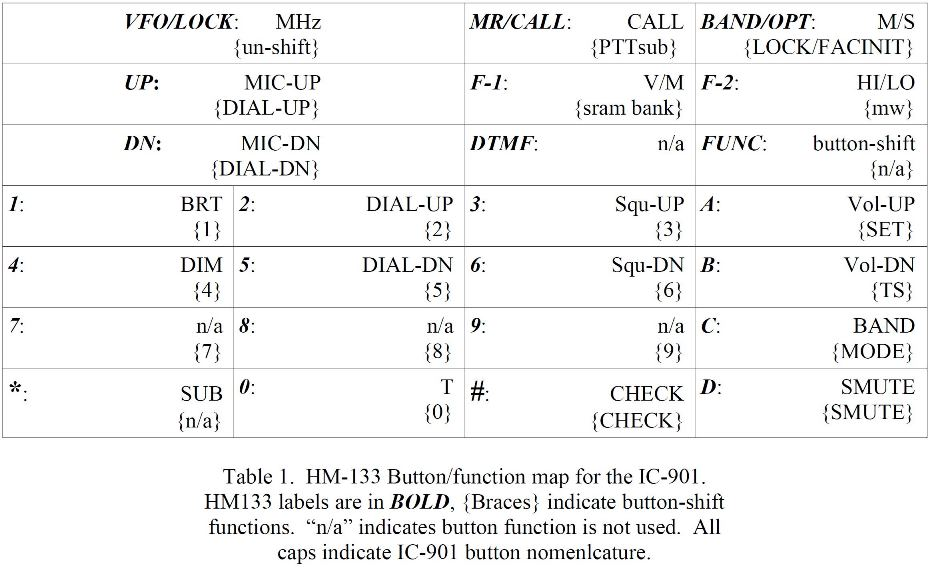

This is a project which allows the HM-133 microphone (or HM-151) to act as a multi-function, DTMF microphone for the IC-901 radio.

Here is a listing of the various project documents that are directly relevant to the DTMF Adapter:
SiLabs Programming guideHM-133/151 Microphone Modifications